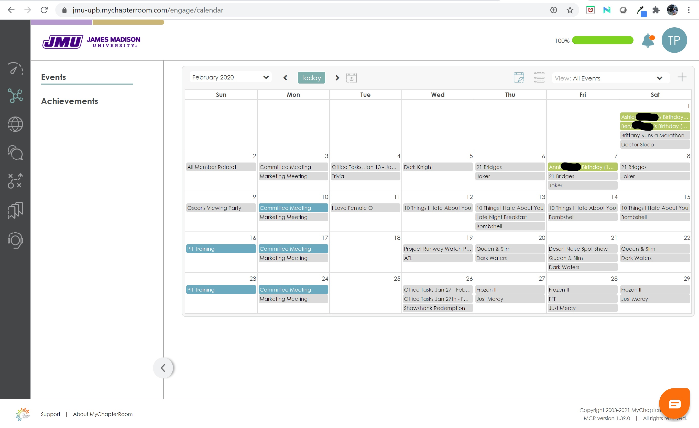

My Chapter Room (MCR) is a website and service that allows organizations to communicate with members in one central location. It consolidates tasks such as email lists, attendance, polls, and messaging.
As a student, I have been in organizations that use MCR, and have many friends who have also had to use it in their clubs and/or Greek orgs. I personally had a few pain points when it came to using My Chapter Room, specifically using the mobile app. While convenient that there was only one app I needed to use, I found it fell short in many areas. The app was very much a “Jack of all trades, and master of none.”
The app was definitely still usable, so I cast away my qualms. But as I began to hear complaints from other students (usually casual jabs at the app, but still complaints nonetheless), I decided I would take a closer look. I conducted user research, and by identifying user’s pain points I was able to redesign the MCR app for much better usability.
I first got a pool of people to take a survey of their experiences with My Chapter Room from a variety of organizations. The survey was anonymous, but I left a space at the end to allow people to write their name if they were willing to be interviewed further about their answers. I got 21 people to fill out the survey, and interviewed 4 of them.
Based on this data, I decided to go forward with redesigning the user flow of checking the events for the upcoming day, week, and month.
When you open the app, the home screen is a dashboard with different blocks/widgets. To go to the events, you can click on the upcoming events widget, or go to the hamburger menu in the top left corner. Then you can click ‘Events’. In the events page, there is a dropdown menu that lets you select the month. Underneath will show a long scrollable list of events in chronological order.
I also evaluated the MCR’s desktop site to see what design features could be carried over to the mobile app.
The desktop version of the events page includes a monthly view and some color differentiation. I knew I wanted to include a monthly view for the app, but I also wanted to have more in depth organization of events using color coordination, such as different colors between events for all members, committee events, and school holidays.
Based on the survey answers and further interviews, there were a few common pain points with the current design of the app
To remedy these pain points I redesigned the event calendar to:
The events dashboard widget was moved above the mail, because the mail is often just a repeat of an announcement. It was also made bigger in order to see more events.
For the daily/weekly view, the dates are listed across the top, and you will automatically open to the current date. The events for that day are listed and also color coded based on type of event. If you click an event, it will expand to show you more details. In the bottom right corner, there is a button that lets you switch to the monthly view.
When designing the monthly overview, I discovered listing every event in each box was cramped and would require a very small font. Instead, I decided to add colored dots to represent the events. The days that have dots are the days that have events. The number of dots equals the number of events, and the color of dot shows what kind of event it is. If you click on a event, it will take you to the event details within the daily view.
This project was created as for SMAD308: Interactive Design II, a course at James Madison University